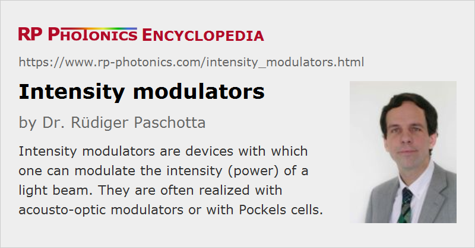

Intensity Modulators
Definition: devices which can be used to modulate the intensity (power) of a light beam
More general terms: optical modulators
German: Intensitätsmodulatoren
How to cite the article; suggest additional literature
Author: Dr. Rüdiger Paschotta
There are various kinds of optical modulators with which one can modulate the intensity – or more precisely the optical power – of light. In many case, the input light is delivered in the form of a free-space laser beam, in other cases, through a waveguide, e.g. an optical fiber. Most modulators are controlled with an input voltage varying in a certain range.
Intensity modulators are required for many purposes, e.g. in optical data transmission, in laser printers, in laser material processing or for the accurate stabilization of the optical power of a beam.
Intensity modulators can be realized based on a number of different physical principles. The most important types are described in the following sections. They differ substantially in various characteristics which can be important for applications:
- The input light is usually either a free-space beam or propagates in an optical fiber (fiber-coupled modulators).
- Some intensity modulators, e.g. electro-optic ones, can have a very high modulation bandwidth, i.e., they can be used for very fast modulations as required e.g. in optical communications.
- Some modulators can allow for transmission nearly in the full range of 0 to 100 %, while others exhibit high transmission losses or do not allow for strong attenuation. Specifications may include an extinction ratio or a dynamic range in decibels. A high extinction ratio is important, for example, when producing pulses from a continuous-wave input.
- Some intensity modulators work only with polarized beams, while some others work in a polarization-independent way.
- Different types need very different amounts of drive voltage. Particularly high drive voltages are often required by electro-optic modulators, see the article on Pockels cell drivers.
- Some modulators simply absorb the non-transmitted part of the optical radiation (convert that energy to heat), while others release that power in the form of a second output beam.
- Depending on the type of the modulator, the permissible input optical power can be quite different. To high input powers may lead to damage of the modulator or only to temporarily degraded performance.
- Other aspects of practical importance may be the compactness, the preservation of beam quality, and the sensitivity to changes of optical wavelength and temperature.
Acousto-optic Modulators
Acousto-optic modulators (AOMs) naturally modulate the optical power both of the diffracted beam and the transmitted non-diffracted beam. With zero acoustical signal applied, the full incident power is transmitted in the non-diffracted beam, apart from some small amount of parasitic losses. If one applies some acoustical power, the power of the reflected beam is approximately proportional to the squared sign of a coefficient which itself is proportional to the square root of the acoustical power. Usually, the maximum diffraction efficiency stays well below 100 % – often it is of the order of 50 %.
If it is important to reach zero output power, one usually has to use the diffracted beam, which however limits the maximum transmission. Nearly complete transmission is possible for the non-diffracted beam, but in that case the transmission can be reduced only to e.g. 50 %. In both cases, the possible transmission bandwidth is limited by the propagation time of the sound wave in the crystal. Therefore, small-aperture devices are tentatively suitable for higher modulation bandwidths.
Acousto-optic intensity modulators are used for various applications, e.g. for laser printers, for noise eaters, and for the active mode locking of lasers.
Typically, acousto-optical intensity modulators are designed for a certain polarization direction of the input beam, but there are also largely polarization-independent devices.
Electro-optic Intensity Modulators
And electro-optic modulator is based on a Pockels cell, which acts as a phase modulator. The phase modulation is then typically transformed into an intensity modulation by sending the light through a polarizer. Typically, the output power is proportional to cos2 (C U) or sin2 (C U) where C is a constant and U is the applied voltage. The constant C is related to the half-wave voltage Uπ of the Pockels cell: C = π / (2 Uπ). (See the article on Pockels cells for more details.) Unfortunately, the half-wave voltage is often quite high – hundreds of volts or even more, particularly for devices with large aperture. This increases the demands on the driver electronics if the full transmission range (0 – 100 %) is required.
The modulation bandwidth can be very high, if an optimized electronic driver is used, which also needs to cope with the capacitance of the Pockels cell.
Relatively small drive voltages are possible for fiber-coupled modulators, where the optical radiation propagates in a well-defined region of the crystal and thus allows the use of a Pockels cell with rather small aperture.
Particularly for waveguide devices, it is also possible to transform the phase modulation intern intensity modulation using an interference effect instead of a polarizer. For example, there are Mach–Zehnder modulators where a phase modulation is applied to one arm of a Mach–Zehnder interferometer.
Often, electro-optic intensity modulators are employed when the modulation needs to be rather fast. Most of them work only for a certain polarization direction.
Electroabsorption Modulators
Electroabsorption modulators are semiconductor devices working based on the Franz–Keldysh effect. They are usually operating on light in a waveguide and are coupled to optical fibers or placed on a chip together with other components, e.g. together with a laser diode to form a telecom transmitter. They are limited in terms of optical powers but can have a very high modulation bandwidth. Compared with electro-optic modulators, they require much smaller drive voltages.
Modulators based on Semiconductor Optical Amplifiers
It is also possible to use a semiconductor optical amplifier as an intensity modulator. Without drive current, it provides some degree of attenuation (negative gain), while some positive gain is achieved when the device is supplied with pump current. The modulation speed can be fairly high, with sub-nanosecond rise and fall times for the generation of rectangular pulses, for example. It can of course also be useful to have amplification at the same time.
In contrast to other optical modulators, such devices exhibit gain saturation and introduce amplifier noise, but this is not relevant for all applications. For example, a SOA-based modulator may be used to produce short seat pulses for fiber amplifier systems. The achievable extinction ratio can be more than 50 dB, i.e., far better than that of an acousto-optic or electro-optic modulator, for example.
Liquid Crystal Modulators
It is possible to modulate the polarization of light by applying a voltage to a liquid crystal material, and to obtain intensity modulation by adding a polarizer. Such liquid-crystal modulators can work with large apertures and low drive voltages, but they are seriously limited in terms of modulation bandwidth.
Devices can be made where different parts of the beam area are modulated independently (spatial light modulators).
Suppliers
The RP Photonics Buyer's Guide contains 13 suppliers for intensity modulators. Among them:
Questions and Comments from Users
Here you can submit questions and comments. As far as they get accepted by the author, they will appear above this paragraph together with the author’s answer. The author will decide on acceptance based on certain criteria. Essentially, the issue must be of sufficiently broad interest.
Please do not enter personal data here; we would otherwise delete it soon. (See also our privacy declaration.) If you wish to receive personal feedback or consultancy from the author, please contact him e.g. via e-mail.
By submitting the information, you give your consent to the potential publication of your inputs on our website according to our rules. (If you later retract your consent, we will delete those inputs.) As your inputs are first reviewed by the author, they may be published with some delay.
See also: optical power, optical modulators, Pockels cells, acousto-optic modulators, electro-optic modulators, electroabsorption modulators, phase modulators
and other articles in the category photonic devices
|  |
If you like this page, please share the link with your friends and colleagues, e.g. via social media:
These sharing buttons are implemented in a privacy-friendly way!